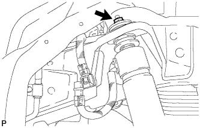
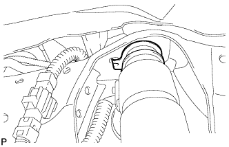
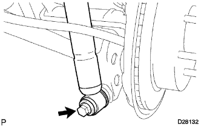

REAR SHOCK ABSORBER > INSTALLATION |
| 1. TEMPORARILY INSTALL REAR SHOCK ABSORBER ASSEMBLY LH |
Install the cushion No. 2 to the rear shock absorber assembly LH.
|   |
Install the cushion No. 1 and rear shock absorber assembly LH with a new nut.
|  |
Temporarily install the rear shock absorber assembly LH with the bolt.
Connect the absorber control actuator connector.
| 2. INSTALL REAR WHEEL |
| 3. STABILIZE SUSPENSION |
Lower the vehicle.
Bounce the vehicle up and down several times to stabilize the suspension.
| 4. TIGHTEN REAR SHOCK ABSORBER ASSEMBLY LH |
Tighten the bolt.